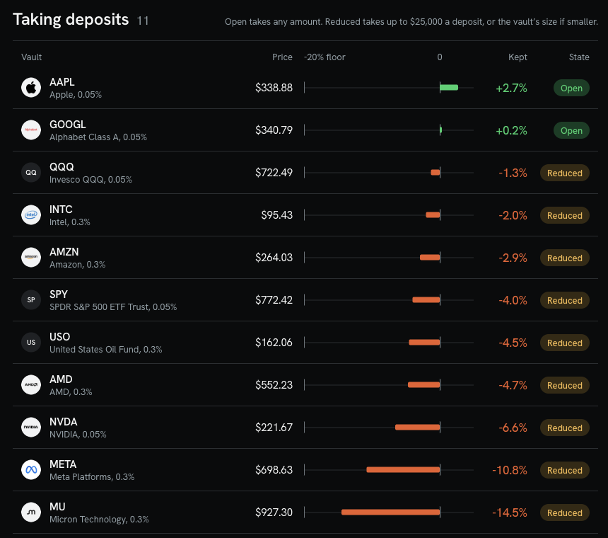

Deposit AAPL, GOOGL, NVDA and 8 more Stock Tokens and earn a share of every trade's fee. Uptick shows what you keep after losses to fast traders, and opens a vault only where past swaps say it holds up.
Vaults at launch
11
AAPL, GOOGL, NVDA and 8 more
Swaps replayed
2.7M
30 days to 2026-10-17
Fees paid to liquidity providers
$996.6K
On the 17 vault pools, 30 days
Stock Tokens tracked
17
Chainlink priced, USDG pools
Source: live app, uptick-fi.pages.dev, summary row on the home page.
Holders ask for yield on the stock they already hold.
189,012
wallets hold NVDA on Robinhood Chain. The tokens sit in wallets and earn nothing.
114,550
wallets hold SPCX on the same chain.
"borrow/lend markets, where users can get yield by lending stock or pay yield by shorting stock"
@Nibel_eth, X, 2026-10-11
"tokenized equities like xStocks need to plug directly into defi lending markets so users can earn yield on SPYx or NVDAx while holding them"
@JackNomadsGOD, X, 2026-10-13
"I'd have been massively profitable on RH chain if I had stuck to LP'ing tokenized stocks"
@WazzCrypto, X, 2026-10-15
"Clients holding SPYx, QQQx or NVDAx can deposit them and earn yield in the same asset while keeping market exposure."
u/SolBrothers_, r/solana, 2026-09-14, on a live product on another chain
AAPL and GOOGL kept money in both halves of the replay.
Reduced
9 vaults take up to $25,000 a deposit
The weaker half sits between -20% and break-even.
Closed
6 vaults take none
The weaker half kept less than the -20% floor.
Exit in kind is always open. Both tokens come back, with no oracle, no swap and no pause in the way.

Source: live app, uptick-fi.pages.dev, vault list as served 2026-10-21. contracts/SECURITY.md for exit in kind.
A weekend pays $13.64 in fees for every $1 lost to fast traders. NYSE hours pay $1.16.
NYSE hours
$1.03 to $1.35
Weeknights
$1.30 to $3.90
Weekends
$3.94 to $33.27
13.64 pooled
1.16 pooled
2.74 pooled
5.1M swaps, 54 days, three pools
NVDA, SPCX and TSLA on Robinhood Chain. The weekend ratio beats the NYSE ratio in 22 of 23 pool-weeks.
The engine drops what its own replay refutes
A schedule built on the clock met its bar on 0 of 3 tokens, and random session labels beat it in 64 of 64 cells. Twelve off-chain signals failed their shuffled control. Uptick acts on pool and band, measured per token.
Source: README.md, spikes/stock-vaults/FINDINGS.md, spikes/offchain-signals/FINDINGS.md. Fee earned per $1 lost to informed flow, 1 hour markout, window 2026-08-24 to 2026-10-17.
Each token picks its band on the first half. The second half decides the door.
AAPL kept +2.7% a year in its weaker half
Band ±7.5%. First half +2.7%, held-out half +3.9%. Open.
NVDA's tight band kept +29.4% on the first half
The held-out half kept -6.6%. The gate shows the held-out number, so NVDA is reduced.
The conservative figure decides
The upper accounting bound sits beside it on every vault page.
Token
Band
-40-20 floor0+20
Weaker half
Door
AAPL
±7.5%
+2.7%
Open
GOOGL
±20%
+0.2%
Open
QQQ
±10%
-1.3%
Reduced
INTC
±20%
-2.0%
Reduced
AMZN
±7.5%
-2.9%
Reduced
SPY
±2.5%
-4.0%
Reduced
USO
±20%
-4.5%
Reduced
AMD
±20%
-4.7%
Reduced
NVDA
±1.5%
-6.6%
Reduced
META
±15%
-10.8%
Reduced
MU
±15%
-14.5%
Reduced
PLTR
±3.5%
-20.3%
Closed
TSLA
±7.5%
-27.4%
Closed
CRCL
±20%
-28.4%
Closed
MSTR
±3.5%
-37.1%
Closed
GME
±2.5%
-144.2%
Closed
SPCX
±1.5%
-199.5%
Closed
Source: web/lib/vault-universe.json, keeper/data/params.json. Weaker half of two 15 day halves, 30 days to 2026-10-17. Bars end at -40.
AAPL's pool paid 18.8% a year. Depositors kept 3.2%.
$17.08
of every $100 the pool pays stays with depositors. $9.01 pays for recentring and $73.91 goes to informed traders.
0.35%
entry fee, kept in the vault for the holders who stay. It covers 97.2% of the feed's round-to-round moves.
10%
of collected fees is Uptick's share, minted so the share price never steps at harvest.
No fee
on exit in kind, in either token.
Source: live app, uptick-fi.pages.dev/vault/aapl, 30 days to 2026-10-17. Dollar split derived from the same figures. contracts/SECURITY.md, contracts/script/DeployAll.s.sol.
Four review rounds, each re-reading the last round's fixes. The fourth ended SHIP.
Round 1
1 High and 3 Medium, all closed
A same-block share lock and a spot-to-TWAP band against deploy sandwiches. Deposits priced at the lowest of Chainlink, TWAP and spot. A 24 hour owner queue. A corporate-action gate on the token's oracle pause and multiplier.
Round 2
Round 1 fixes confirmed
Swap floors include the pool fee, so 1% pools rebalance. Router deposits clear at $500, $2,000 and $10,000.
Round 3
TWAP bound set to 30 bp
Entry fee raised to 35 bp, so a deposit ahead of a price update does not pay. Exits work on every fee tier.
Round 4
SHIP: no Critical, High or Medium
Residuals are published with their measured bounds and the lever that moves each.
80 of 80
security tests pass on a fork of the real pools
50
mutation checks: break a guard, see red, restore, see green
24 h
queue on every owner setting, with the full calldata emitted
In kind
exit stays open when everything else is closed
Source: contracts/SECURITY.md and the four reports in contracts/ (SECURITY-REVIEW, SECURITY-REREVIEW, SECURITY-REVIEW-3, SECURITY-REVIEW-4, 2026-10-20). Contracts final, creation-code hash pinned.
Agents read the same evidence the app shows.
list_vaults
Every vault with its door, fee APR and kept APR.
get_vault_evidence
Replay pools, gate rule, reason and swap count.
prepare_deposit
Unsigned transactions. The user signs and sends.
prepare_withdraw
Unsigned exit transactions, in kind included.
One endpoint, MCP over Streamable HTTP. A closed vault returns its gate reason, so an agent never routes a deposit past the door.
GET /vaults/aapl, gate.reason
"Open: the weaker half of the 30-day replay kept 2.7% a year, at or above break-even, across 95,275 swaps."
tools/call prepare_deposit, id spcx, amount 10
{"error": "Closed: the weaker half kept -199.5% a year, below the -20% floor."}
GET /vaults/aapl, pools: fee APR, first half, held-out half
Pool
Fees
First
Held-out
v3 0.05%
18.8%
+2.7%
+3.9%
v4 0.3%
26.8%
+12.3%
+3.3%
v3 0.3%
11.3%
-16.4%
-12.8%
uptick-evidence.earn-shield-alerts.workers.dev, responses as served 2026-10-21. llms.txt and the evidence API are open to any agent.
Source: live evidence API and MCP endpoint, api/src/mcp.ts, web/public/llms.txt.
None of four vault codebases has a settings timelock or stock-split handling. Uptick has both.
Codebase
Owner settings
Stock split
Deposit priced from
AutoRange
24 setters, each takes effect at once
Raw balances and ticks, no multiplier
Pool spot
Arrakis V2
Manager, fee, pool and router change at once
Plain ERC-20 shares, no multiplier
Pool spot
Gamma
setFee, setTwapCheck, ownership: one transaction
Raw balances, no multiplier
Pool spot, optional 1 hour TWAP filter
Veda
Bounds, fees and roots apply in the same transaction
No ERC-8056 or rebase logic
Stored rate, no maximum age
Uptick
24 hour queue, calldata emitted, void after 7 days
ERC-8056 gate: price-checked paths close around each multiplier change
Lowest of Chainlink, TWAP and spot
Session-fee hooks (Fables, SessionFeeHook, Bellswap, ClosingBell) price swaps. Range vaults pick bands by hand. Uptick publishes the calibration for every token and opens a door only where it holds.
Source: competitors/*/STUDY.md with file and line citations (Arrakis V2, Gamma Hypervisor, Veda BoringVault, AutoRange). Uptick: contracts/SECURITY.md.
The fees sit in more than one pool. A v4 adapter widens the pot a vault can reach.
All LP fees, 7 days
$623.9k
Reachable in v3 today
$184.8k
Reachable in v4
$198.5k
Pons launchpad pools
$0 to an outside LP
$488.40M of Stock Token volume moved through Uniswap v3 and v4 on the 17 tokens in 7 days. Launchpad pools pair a stock with a memecoin across 256 traded pools and $9.95M, and take their fee in the hook.
PLTR, band 350 bps
The v3 0.3% pool keeps -20.3% in its weaker half and stays closed.
+28.2%
What the PLTR v4 1% pool kept in its weaker half in the same replay.
Next build: the v4 position adapter
It points a vault at hookless v4 pools, where the same engine already measures the evidence.
Source: docs/research/founder-house/vaults/VENUES.md (2026-10-13 to 2026-10-20, read over the public RPC). keeper/data/replay.json, PLTR pools.
The app, the evidence API, the MCP endpoint and the launch film are live.
Shipped
App
uptick-fi.pages.dev, 17 vaults, each with its gate and reason
Evidence API
JSON for every vault, plus the MCP endpoint and llms.txt
Launch film
The weekend finding and the three doors, on screen
X
@uptickfi
Contracts
Final, creation-code hash pinned, deploy ready
The plan, by date
Oct 23
10 holder interviews, 3 signed holder LOIs, 6 integration conversations, 1 integration LOI, each counted from a file
Oct 23 to 25
Founder House, Singapore
Every week
The replay refreshes and each vault opens or closes on its new halves
Source: live app and API read 2026-10-21. Dated targets: gtm/uptick/EVIDENCE.md and LAUNCH.md.
One builder shipped the contracts, the engine and the app. The ask is to open the doors.
Kamal
Built StockVault, the keeper, the replay engine, the web app and the evidence API. github.com/kamalbuilds
Four security reviews
Each round's fixes were re-read in the next, ending SHIP.
Capital
Seed deposits for the first mainnet vaults, AAPL and GOOGL, and the v4 position adapter
Holders and LPs
Introductions to Stock Token holders who will size a deposit and sign a letter of intent
Integrations
Range vaults, hook builders and chain data surfaces that carry the kept APR
Uptick shows which of your stock tokens can earn, and how much you would keep.
Source: this repository. uptick-fi.pages.dev, @uptickfi.